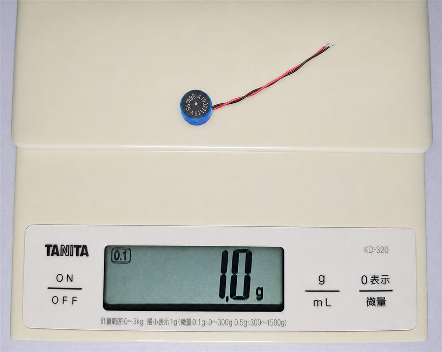
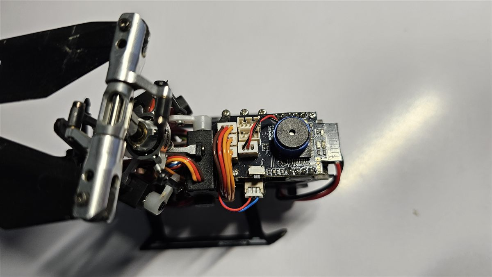
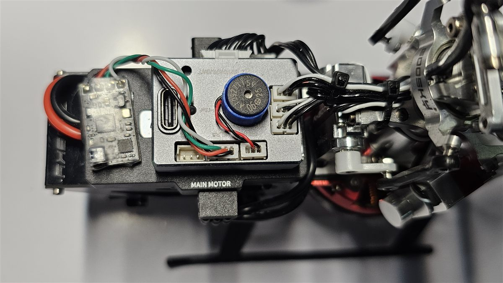
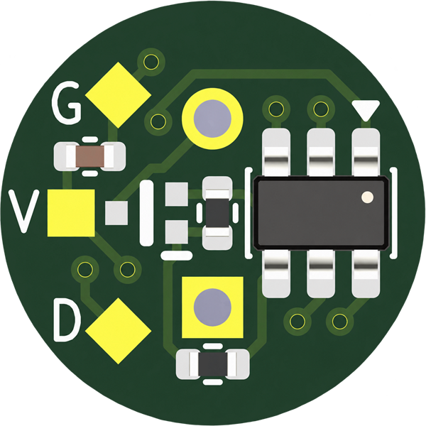
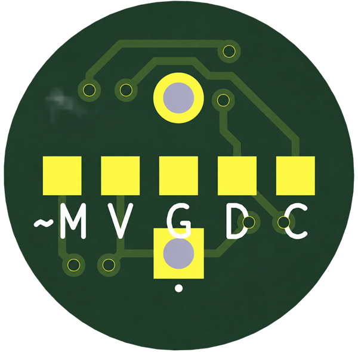

機体発見アラーム
市販の物は大きくて重すぎたので、超小型・軽量の機体発見アラームを自作しました。直径 φ10 mm、重さ 1 g。K110S に乗せても飛行に影響がありません。


鳴り方
1 分ごとに分報が鳴ります。5 分後なら 5 回「ピーッ」と鳴るので、何分飛ばしたかの目安にもなります。7 分後からはアラームが鳴り続けるので、草むらに墜落しても容易に発見できます。
- 1 分後1 回
- 2 分後2 回
- 3 分後3 回
- 4 分後4 回
- 5 分後5 回
- 6 分後6 回
- 7 分後〜鳴り続ける
時間は電源が入ったときから数えます。電源が入ると、まず短い起動音が鳴ります。
重さ 1 g
はかりで実際に計ると 1.0 g。小さなヘリに乗せても飛行に影響がありません。

接続
- K110S：B+ と B- に接続します。
- それ以外の機体：S.BUS のコネクタなどに接続します。


基板
直径 10 mm の丸い基板です。表に PIC10F202 と部品、端子 G・V・D。裏には書き込み用の端子（~M・V・G・D・C）があります。


仕様
- 大きさ
- 直径 φ10 mm
- 重さ
- 1 g
- マイコン
- PIC10F202（SOT-23 の 6 ピン）
- ブザー
- AT-0927-TT-5
- 電源
- 3.3〜5 V
設計データを公開しています
基板の KiCad データ（LALARM）と、PIC のプログラム（MPLAB X のプロジェクト LALARM.X）を GitHub で公開しています。
GitHub を開く